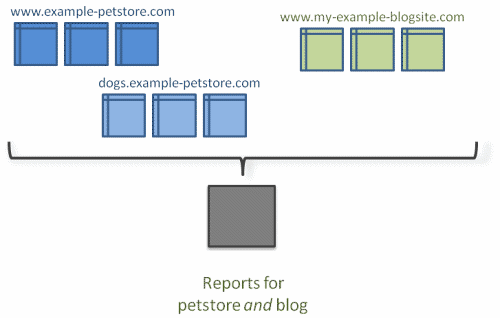

©2011 Google -
Code Home -
Terms of Service -
Privacy Policy -
Site Directory
Google Code offered in:
English -
Español -
日本語 -
한국어 -
Português -
Pусский -
中文(简体) -
中文(繁體)
-
-
 Overview
Overview
-
Tracking Code
Management API (Labs  )
)
)Export API (Labs )
)-
- Home
- Dimensions & Metrics
- Libraries & Examples
-
Changelog & Issues
Website Optimizer (Labs )
More Google Analytics resource links
)Cross-Domain Tracking
This document describes a variety of ways to use cross-domain tracking customizations when you want to collect visits to multiple domains in a single profile—as if they were a single site rather than two separate ones. It also covers how to track portions of a website, such as sub-directories and iFramed content. If you are unfamiliar with the general process of cross-domain tracking, see Domains and Directories in our Help Center.
Introduction
A default setup of Google Analytics is designed to track content and visitor data for a single domain, such as www.example.com.
However, suppose you want to use Analytics for more complex situations, such as tracking:
- Subdomains—all visitors to both
dogs.example.comandwww.example.com, with data for both showing in the same report profile - Subdirectories—only visitors to the
www.example.com/dogssubdirectory in a separate report as if it were a single site - 3rd-party shopping carts—visitors to your online store and to your shopping cart hosted on another domain
- Top-level domains—all visitors to two domains that
you own, such as
www.example-petstore.comandwww.my-example-blog.com, with data for both showing in the same report profile - IFramed Content—visitor and pageview data for content in an iFrame of another domain.
In any of these cases, you'll need to do some customization to the tracking code in order to correctly track visitors. Before doing this, it's a good idea to read how Domains and Directories are treated in a default Analytics installation.
Tracking Scenarios
This section covers a variety of tracking scenarios, ordered by the most popular methods.
Tracking Across Multiple Domains and Sub-domains
In this scenario, you might want to track two unique domains and one sub-domain. For example, suppose you have an online store and you also want to track visitor and campaign data to your blog.

The following shows key tracking code customizations for three example URLs.
- Online Store Domain:
www.example-petstore.com Asynchronous syntax
Asynchronous syntaxvar _gaq = _gaq || [];
_gaq.push(['_setAccount', 'UA-12345-1']);
_gaq.push(['_setDomainName', '.example-petstore.com']);
_gaq.push(['_setAllowLinker', true]);
_gaq.push(['_setAllowHash', false]);
...
<a href="http://www.my-example-blogsite.com/intro.html"
onclick="_gaq.push(['_link', 'http://www.my-example-blogsite.com/intro.html']); return false;">See my blog</a>
...
<form name="f" method="post" onsubmit="_gaq.push(['_linkByPost', this]);"> Traditional (ga.js) syntax
Traditional (ga.js) syntaxThe only links or form data that you need to customize are those that point to
www.my-example-blogsite.com. This is not required for links to the sub-domain of this site, since the_setDomainName()function defined.example-petstore.comas the domain to enable cookie access for any other subdomains. - Online Store Subdomain:
dogs.example-petstore.comAsynchronous syntaxvar _gaq = _gaq || [];
_gaq.push(['_setAccount', 'UA-12345-1']);
_gaq.push(['_setDomainName', '.example-petstore.com']);
_gaq.push(['_setAllowLinker', true]);
_gaq.push(['_setAllowHash', false]);
...
<a href="http://www.my-example-blogsite.com/intro.html"
onclick="_gaq.push(['_link', 'http://www.my-example-blogsite.com/intro.html']); return false;">See my blog</a>
<form name="f" method="post" onsubmit="_gaq.push(['_linkByPost', this]);">Traditional (ga.js) syntaxLinks back to the primary domain do not need configuration because the sub-domain shares the same cookies with the primary domain.
- Blog Domain:
www.my-example-blogsite.comAsynchronous syntaxvar _gaq = _gaq || [];
_gaq.push(['_setAccount', 'UA-12345-1']);
_gaq.push(['_setDomainName', 'my-example-blogsite.com']);
_gaq.push(['_setAllowLinker', true]);
_gaq.push(['_setAllowHash', false]);
...
<a href="http://dogs.example-petstore.com/intro.html"
onclick="_gaq.push(['_link', 'http://dogs.example-petstore.com/intro.html']); return false;">See my pet store</a>
...
<form name="f" method="post" onsubmit="_gaq.push(['_linkByPost', this]);">Traditional (ga.js) syntaxThis configuration sets the domain name to the top-level domain for the blog site. In this way, if you later add any sub-domains for the blog site, that sub-domain will be able to share cookies with its parent and you will not need to set up special linked calls between them. However, you still must use the
_link()and_linkByPost()methods for any form or links towww.example-petstore.com.
Tracking Across a Domain and Its Subdomains
As mentioned above, a default setup of Google Analytics is designed to track content and visitor data for a single domain, such as www.example.com. This means that even if you manage both a domain and a sub-domain, you must make modifications to the tracking code in order to share visitor data across both domains.
Suppose you have the following URLs that you want to track as a single entity:
www.example-petstore.comdogs.example-petstore.comcats.example-petstore.com
For this setup, you would use the following key customizations for the tracking code on all three domains.
Asynchronous syntax
//Tracking code customizations only
var _gaq = _gaq || [];
_gaq.push(['_setAccount', 'UA-12345-1']);
_gaq.push(['_setDomainName', '.example-petstore.com']);
_gaq.push(['_setAllowHash', false]);
_gaq.push(['_trackPageview']);
Traditional (ga.js) syntax
You will not have to make any adjustments to the links or forms between
these three sites, since they can all share the same cookies due to the fact
that you set the domain name to the top-level domain (e.g., .example-petstore.com).
In this example, notice the use of the leading "." in
the declaration of the domain. Since the Analytics tracking code creates
a hash value from the string that you provide in the _setDomainName() method,
it's recommended that you follow standard conventions and use the leading "." when
setting your domain name in this way. See the documentation on _setDomainName() for
more details.
Tracking Between a Domain and a Sub-Directory on Another Domain
Another common tracking scenario is to track visitor and traffic data between a single domain and a sub-directory of a different domain. This might occur when you want to track traffic between your website and your online blog, where your blog is limited to a sub-directory of the blog service. The follow example URLs each contain recommended customizations for the tracking code on both pages.
- Main Website Domain:
www.example.comAsynchronous syntaxvar _gaq = _gaq || [];
_gaq.push(['_setAccount', 'UA-12345-1']);
_gaq.push(['_setAllowLinker', true]);
_gaq.push(['_setDomainName', '.example.com']);
_gaq.push(['_setAllowHash', false]);
...
<a href="www.blog-hosting-service.com/myBlog"
onclick="_gaq.push(['_link', 'www.blog-hosting-service.com/myBlog']); return false;">View My Blog</a>
...
<form name="f" method="post" onsubmit="_gaq.push(['_linkByPost', this]);">Traditional (ga.js) syntax - Blog URL:
www.blog-hosting-service.com/myBlogAsynchronous syntaxvar _gaq = _gaq || [];
_gaq.push(['_setAccount', 'UA-12345-1']);
_gaq.push(['_setDomainName', 'none']);
_gaq.push(['_setAllowLinker', true]);
...
<a href="www.example.com"
onclick="_gaq.push(['_link', 'www.example.com']); return false;">View My Site</a>
...
<form name="f" method="post" onsubmit="_gaq.push(['_linkByPost', this]);">Traditional (ga.js) syntax
For any form submission from www.example-petstore.com to the shopping cart website, you would use the _linkByPost() method to copy traffic and visitor cookie data via HTTP POST to the shopping cart site. The _setAllowLinker()
method directs the target site to read cookie data from the POST data
rather than from the regular user session information. In this way, you
can pass cookie data set on one domain to another and thereby retain the
visitor session from your online store to your shopping cart.
Similarly, use the _link() function to transfer visitor data on any links going from the online store to the shopping cart.
Tracking Across iFrames
In a site where the transfer between domains is done by opening a new window
or by including content in an iFrame, you will need to to use the _getLinkerUrl() method
to transfer visitor and campaign cookies from one domain to another. For example,
suppose you include a form in an iFrame that is hosted on www.my-example-iframecontent.com.
In order to transfer visitor information from the parent page that hosts
the iFrame on www.example-parent.com, you would use JavaScript
to load the iFrame and pass in the cookie information using the _getLinkerURL() method.
The following example illustrates only the linking function and assumes that cross-domain tracking is configured in the tracking snippets for both domains.
Asynchronous syntax
_gaq.push(function() {
var pageTracker = _gat._getTrackerByName();
var iframe = document.getElementById('myIFrame');
iframe.src = pageTracker._getLinkerUrl('http://www.my-example-iframecontent.com/');
});
Traditional (ga.js) syntax
Configuring iFrame Tracking for Internet Explorer
iFramed content that is hosted in a separate domain from the parent page is regarded as third-party content. The default privacy setting for Internet Explorer 6 and above does not allow third-party websites to store cookies on the first-party site.
This means that Analytics tracking for iFramed pages requires special configuration in order to work in Internet Explorer. For the web pages that reside in the iFrame, you will need to configure privacy preferences. You can set up privacy preferences on the hosted pages by using one of the following methods:
- include a special "Platform for Privacy Preferences" (P3P) HTTP header for the included site's pages
- provide a P3P XML manifest for the included site's pages
For more information, see the following resources:
- P3P guides for webmasters:
- Microsoft Knowledge Base article explaining P3P support in IE
- Cookies in Google Analytics
Tracking a Single Subdirectory
There are two common cases for restricting Analytics tracking to a single sub-directory of a larger domain:
- You have access only to a sub-directory of a larger website, such as when you use an ecommerce hosting service.
- You want to limit tracking to a sub-directory of a larger website, such as when you launch a project on your company's website, which also uses Analytics tracking.
Suppose you have a profile in your Analytics account where you track visitor
data to online presence, which is only part of a larger website host (such
as a blogging service). Your site itself is hosted on www.example.com/myBlog/.
You only want to record visitor and campaign data for the /myBlog subdirectory,
and not for any other page on the example.com domain. In this
case, you also only have access to those web pages included in that sub-directory.
In order to set up tracking for your store, you will need to use the _setCookiePath() function in your tracking code, like this:
Asynchronous syntax
//Tracking Code Customizations Only
var _gaq = _gaq || [];
_gaq.push(['_setAccount', 'UA-12345-1']);
_gaq.push(['_setCookiePath', '/myBlog/']);
_gaq.push(['_trackPageview']);
Traditional (ga.js) ayntax
Once this is set up, your reports will correctly display visitor
and campaign data only for your sub-directory. This is because the
cookie path is set to your sub-directory rather than to the root
directory of www.example.com and your profile will read and write to a unique set of cookies for your store only.
It is considered a best practice to use the _setCookiePath() function in this scenario. If you do not, there are two possible impacts to your reports:
- Other Analytics account cookies set on
www.example.comcan be shared by your account.This means that visitor statistics like
new vs returning,time on site, andnumber of visitsmight be incorrect, since your visitors' session cookies might also reflect activity on other parts ofwww.example.com. - Your reports might reflect campaign details from another part
of the site.
For example, suppose a visitor clicks on an email campaign that goes to another site on the same domain:
www.example.com/theirBlog. In this case, the referral information in the visitor's cookie is set to the campaign named Latest News on Blogging. Later, that same visitor searches on Google and clicks on a search result to your site and purchases a subscription to your blog. Since ad and email campaign referrals persist over search results, you will see the campaign Latest News on Blogging generating sales for your subscription. This is because the_utmz cookie for your online store was not set uniquely for your path.
If you restrict visitor cookies to only your path, campaign and session data for another part of www.example.com will not be included in your reports, since the cookie path is restricted. (Read about Cookies for more background info on how cookies are read by web browsers.)
Other Subdirectory Tips
- If you are tracking visitor and referral traffic for a sub-directory, you might also want to set up an Include filter to the sub-directory to ensure that only content for that sub-directory shows up in your report. See the pre-defined filter article in the Help Center for more information.
- If you are setting up sub-directory tracking on your domain, you should
also ensure that Analytics tracking is disabled for the root path (e.g.
/) and any pages beneath it. For example,www.example.com/index.htmlshould not have Analytics tracking enabled if you want to track subdirectories for the site separately. If tracking for the root path is not disabled, 2 sets of cookies will be set for a page where you have set up path-level tracking, one set for the subdirectory and one set for the top-level domain.
Tracking Across Two Sub-directories on the Same Domain
You might want to track multiple subdirectories on a domain where you do not have access to the pages for the larger domain. For example, suppose you have both an online store and a shopping cart on a service provider's site:
www.example-commerce-host.com/myStore/www.example-commerce-host.com/myCart/
If you want to track user sessions and campaign data from your store to the shopping cart, you would use two methods to achieve this:
- the
_setCookiePath()method, which limits tracking to a specific directory - the
_cookiePathCopy()method, which copies the cookie information to another directory on the same domain
The example below shows the key parts of the tracking code snippet for all pages:
Asynchronous syntax
var _gaq = _gaq || [];
_gaq.push(['_setAccount', 'UA-12345-1']);
_gaq.push(['_setCookiePath', '/myStore/']);
_gaq.push(['_trackPageview']);
_gaq.push(['_cookiePathCopy', '/myCart/']);
Traditional (ga.js) syntax
In this case, a unique cookie is set for the domain, limited to the first directory provided, and the same cookie data is also copied over to the second directory provided. Because both sites reside on the same domain, you will not need to alter any links or form data between the two directories.
Key Components to Cross-Domain Tracking
This section will help you troubleshoot your cross-domain tracking setup by providing detailed information on the key components and how best to use them.
Profiles
When you set up cross-domain tracking, you will want to make sure you do the following with your profiles:
- Set up a master profile for your primary domain without filters.
Because you'll want to use profiles in a special way, for cross-domain tracking, it's first recommended that you set up a master profile for your primary domain. This profile should have no filters added to it. In this way, you will always have baseline historical data for your primary domain that you can refer to if you make errors when setting up filters in your cross-tracking profile.
- Create a profile especially for cross-domain tracking and re-use
your tracking code.
After you have set up a profile and retrieved the tracking code for your primary domain, use the same tracking code for all other web properties. In this way, your configuration will be set up correctly before you start cross-domain tracking and you will also have historical data for all web properties. If you followed the recommendation for setting up master profiles, this should be simply a matter of creating an additional profile for your primary domain using the same tracking code provided in the master profile. All other web properties that you want to link should also have the same tracking code on them.
- Modify your cross-domain profile with a filter to show the full domain
in your content reports.
Once you have domain linking established, you will see only the request URI in the content reports, and not the top-level or sub-domain for a given page. So for example, for visits to the following pages:
—http://www.example.com/index.phpand another page on
—http://sub.example.com/more.php
The reports will show:
— index.php
— more.php
You will not be able to distinguish which page is from which domain. To show the domain in the page reports, set a filter to include all components of the page URL, as follows:- In the Profile Settings page, click the Add Filter link.
- Choose Add New Filter and provide the filter a name.
- Choose Custom Filter and select Advanced on the Filter type settings.
- Under Advanced settings:
- FieldA should be set to Hostname
- FieldB should be set to Request URI
- Set the values for both Field A and Field B to
(.*), which is an expression that captures all characters. - Set the Output To --> Constructor option to Request URI and provide
$A1$B1as the value for that choice.
Your reports will now show:
—www.example.com/index.php
—sub.example.com/more.php
This will capture thewww.example.comportion of your URL and include that at the beginning of your page URL in the content reports section.
Cookies: Necessary to Transferring Visitor Data
In order for two domains to share the same visitor data, such as session and visitor type, they must be able to copy or share the same cookie information. In addition, you should remember:
A session from one domain can only be transferred to another domain via a properly configured click or form submission, or via _getLinkerURL.
The passing of the cookie data via these three methods links two page views under a single session. If a user independently visits two sites that are tracking in the same profile, such as through a bookmark, these visits will still be counted under separate sessions. In this scenario, the linking methods are not invoked, and thus there is no way to determine the initiating session for a given user.
To really understand cross-domain tracking, it helps to understand that cookies are identified by a number of fields and that they are not shared between domains by default. In addition, cookie sharing is automatically turned off in Analytics. This is because in many cases, sharing of the same cookie between domains is undesirable. See Significance of Cookie Identification and Expiration in the Cookie Reference. In addition, Analytics adds an additional integrity check to cookies by default.
_setDomainName('none')
What it does.
This method sets the domain field of the cookie todocument.domainand turns off the unique hash feature, which then allows cookies stored under different domains to read/write each other's data (see Cookies & Google Analytics for details). This method is a convenience mechanism that accomplishes two steps in one. When you apply this method, a separate set of cookies is created for any unique domain or sub-domain that uses it. In order to share cookie data with this method, you must also customize every link or form that connects any two websites that use this method.
When to use it.
When tracking across top-level domains when you will use linker methods to share visitor data and you don't plan to use any sub-domain for the top-level domain.
When not to use it.
When tracking across sub-domains, because you will then have to use linker methods to share data from the primary to the sub-domain, and you can easily avoid this by setting the domain name to the top-level domain, thus only creating a single set of cookies shared by both top- and sub-domains.
_setDomainName('.yourDomainName')
What it does.
This method sets the domain field of the cookie to the string provided in the parameter. With this method, you can control the domain name, but then you must also use_setAllowHash(false)in your configuration to enable cookie data sharing between different domains. You will ONLY have to set up linking between top-level domains because sub-domains will share the same cookies with their parents.
When to use it.
Use this when you want to treat top- and sub-domains as one entity and track in the same profile. Also use this when you want to track across multiple top-level domains AND their sub-domains. You will have to use_setAllowHash(false)when you use this method. In this case, you will need to using linking between the top-level domains, but not between the top-level domains and their sub-domains.
When not to use it.
When you prefer to use the convenience of_setDomainName('none'), which also calls_setAllowHash(false)for you.
_setAllowHash(false)
What it does.
This method turns off the hashing feature in Google Analytics, which provides a unique numeric string in the Content field of the cookie for the set of Analytics cookies for a given user. When you use this method, it sets the value of the Content field to1.
When to use it.
When using_setDomainName()configured to your particular top-level domain.
When not to use it.
When calling_setDomainName('none'), because then this method is redundant.